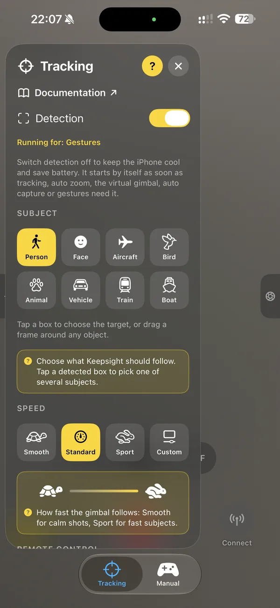

ช่องมองภาพ
ตัวควบคุมบนภาพจากกล้องและแผงทั้งสาม



ช่องมองภาพแสดงภาพจากกล้องโดยแทบไม่มีตัวควบคุม ส่วนอื่นทั้งหมดอยู่ในแผงสามแผงที่คุณเรียกขึ้นมาเมื่อต้องการ
ในช่องมองภาพ
| องค์ประกอบ | ความหมาย |
|---|---|
| สถานะ ซ้ายบน | กำลังค้นหา ล็อกเป้าหมายแล้ว กำลังคาดการณ์ หรือเป้าหมายหลุด “ปิดการตรวจจับ” หมายความว่าการตรวจจับถูกปิดอยู่ เทอร์โมมิเตอร์แสดงว่า iPhone ร้อน |
| รูปแบบ กลางด้านบน | ความละเอียดและอัตราเฟรมปัจจุบัน ในโหมดรูปภาพคือชนิดไฟล์และเมกะพิกเซล แตะเพื่อเปิดแผงรูปแบบ |
| กรอบสีเขียว | เป้าหมายที่ Keepsight ตามอยู่ กรอบสีขาวคือตัวแบบอื่นที่ตรวจพบ |
| เลนส์ | .5×, 1×, 5× และในโหมดวิดีโอมี A สำหรับซูมอัตโนมัติ |
| ชัตเตอร์ | สีแดงในโหมดวิดีโอ สีขาวในโหมดรูปภาพ |
| สวิตช์ด้านซ้าย | สลับระหว่างวิดีโอและรูปภาพ |
| สลับกล้อง | ปุ่มกลมข้างภาพย่อสลับระหว่างกล้องหลังและกล้องหน้า |
| ภาพย่อ | สิ่งที่ถ่ายล่าสุด แตะเพื่อเปิดแกลเลอรี |
| ปุ่มด้านขวา | เชื่อมต่อ ติดตาม หรือหยุด |
แผงทั้งสาม
- ซ้าย การติดตาม: ตัวแบบ ความเร็ว ท่าทาง การควบคุมด้วยเสียง นับถอยหลัง และการเชื่อมต่อกิมบอล
- ขวา กล้อง: รูปแบบ ซูมอัตโนมัติ กิมบอลเสมือน การลั่นชัตเตอร์ และวิดีโอโอเวอร์เลย์
- ล่าง รูปแบบ: ความละเอียดและอัตราเฟรมสำหรับวิดีโอ ชนิดไฟล์และเมกะพิกเซลสำหรับรูปภาพ
เปิดแผงด้านข้างด้วยที่จับแคบ ๆ ที่ขอบภาพ โดยแตะหรือปัด ในแนวนอน ที่จับของแผงกล้องเป็นปุ่มที่ด้านบนของคอลัมน์ขวา แตะข้างแผงเพื่อปิด
การเลือกเป้าหมายในภาพ
- แตะกรอบสีขาวเพื่อให้ตัวแบบนั้นเป็นเป้าหมาย
- ลากกรอบด้วยนิ้วเพื่อตามวัตถุใดก็ได้ แม้แต่สิ่งที่ Keepsight ไม่รู้จัก ต้องใช้ Keepsight Pro
Keepsight จะหมุนหน้าจอเมื่อคุณหมุน iPhone เป็นแนวนอน แม้เปิดล็อกการหมุนอยู่ก็ตาม เหมือนแอปกล้องของ Apple ระหว่างบันทึกวิดีโอ รูปแบบภาพจะคงที่